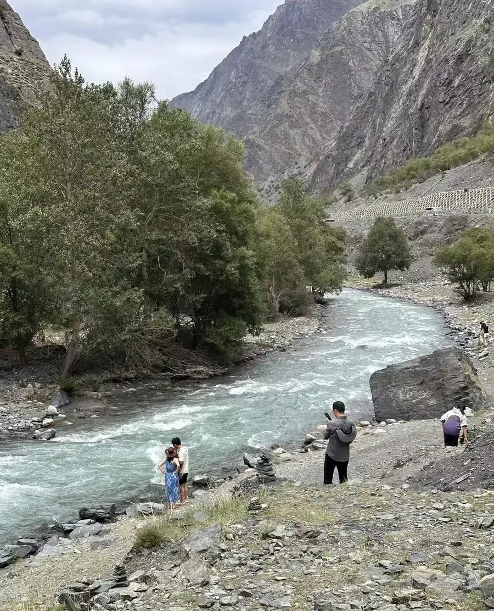
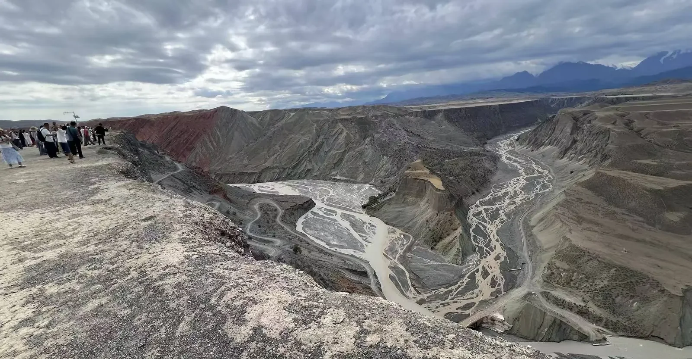
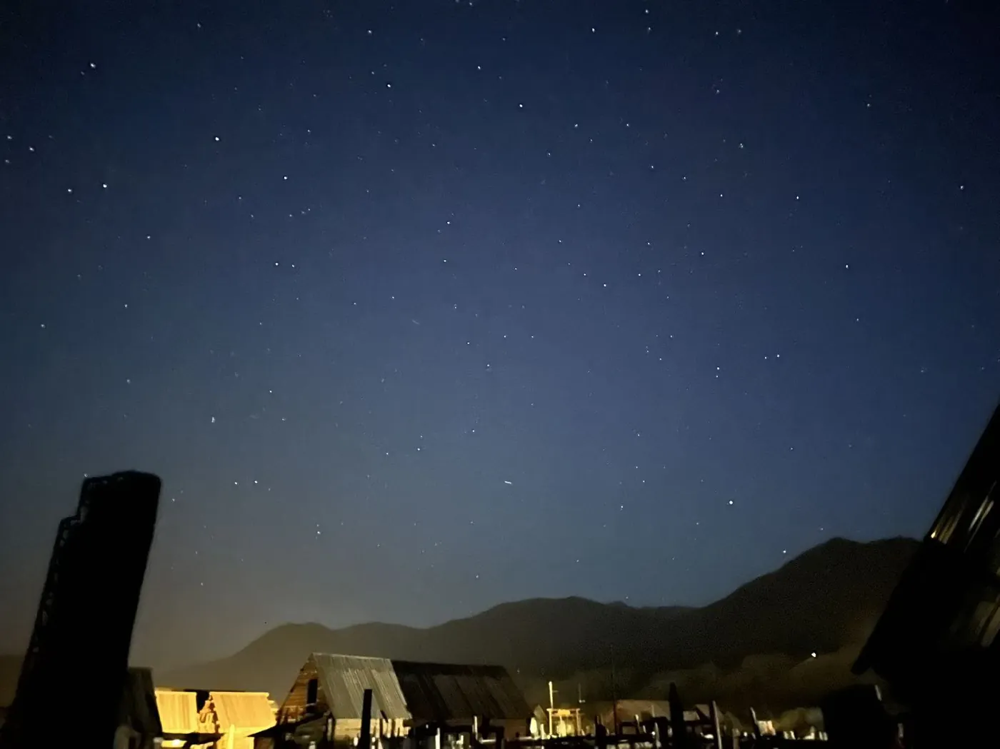
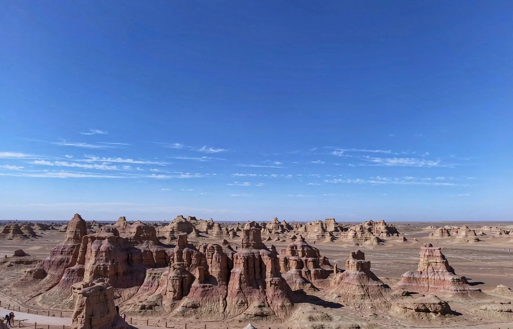

01
在地司機 ＋ 私人導遊
熟悉路況與在地語言的專屬司機，搭配能說景點故事、也能幫你喬拍攝角度的導遊，全程只服務你們一行人。

About Xinjiang Caifeng
不是標準化行程表，而是一段為你而寫、有人全程照應的邊疆敘事。這裡是我們的做法，以及你可能想先知道的事。

Who we are
新疆太大了。166 萬平方公里，從伊犁的花海到帕米爾的雪線，光是「怎麼走才順」就足以決定一段旅程的好壞。我們是一支長年跑在路上的在地團隊，熟悉每年花期的早晚、獨庫公路何時通車、哪個時段的光最適合拍照。
所以我們不賣固定套餐。每一位客人拿到的是從零寫起的路書：依你的天數、季節、節奏與同行的人，把動線、停留點、住宿與接送一次安排妥當。你只需要決定想去哪裡。
出境旅客同樣在我們的服務範圍內——英文溝通、國際接送、飲食與宗教需求，出發前都會先確認清楚。
Why travel with us
三件我們堅持不做的事，以及三件一定做到的事。
熟悉路況與在地語言的專屬司機，搭配能說景點故事、也能幫你喬拍攝角度的導遊，全程只服務你們一行人。
成行當天建立專屬群組，行程、路況、臨時調整都在裡面即時回覆。不用等到回飯店才找得到人。
沒有購物點、沒有硬性早出發。想在湖邊多待一小時、想為一片光掉頭，都算數——這本來就是私人定制的意義。
How it works
不是選套餐，而是從零為你寫一份行程。三步就好，剩下的交給我們。
北疆風光、南疆人文、攝影、家庭、情侶……先告訴我們你想要什麼樣的旅行。
幾人成行、幾天假期、喜歡快一點還是慢一點，我們據此排出最順的動線。
依當季花況、日照與路況，交回一份含每日行程、停留點與住宿建議的專屬規劃。
In the field
這些都是我們在路上拍下的樣子，不是型錄。




FAQ
新疆幅員遼闊、景點之間動輒數百公里，純自由行在交通與路況掌握上較吃力；傳統大團又難免趕路與進店。私人包車定制是兩者之間的解法：有專人處理交通與在地資訊，但節奏完全由你決定。
主要旅遊路線成熟、常年有團隊走訪，機場、景區與城鎮皆有完善配套。我們會在出發前說明當地注意事項，行程中也由在地司機與導遊全程陪同；邊境與少數特殊區域則依規定事先協助辦理相關手續。
6–9 月是草原、花海與湖泊最豐盛的季節；9 月下旬至 10 月初的北疆金秋最適合攝影；獨庫公路通常僅 6 月初至 10 月初開放，視當年融雪與天氣調整。冬季則以雪景與人少的靜謐取勝。
伊犁一帶約 8–10 日、北疆喀納斯環線約 8–10 日、南北疆全景建議 15 日以上。若假期有限，4 日的獨庫公路或吐魯番精華遊也能走得很完整。我們會依你的天數取捨，不硬塞景點。